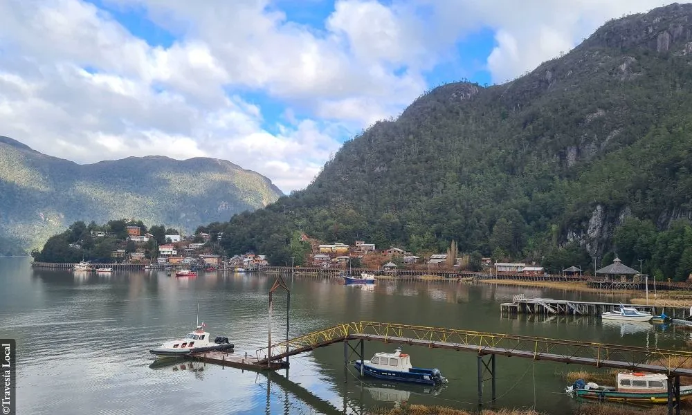

Hay cosas de Tortel que no se explican en un mapa. El sonido de la lluvia sobre la madera, la forma en que cambia la luz sobre el fiordo o las historias que aparecen cuando uno se detiene a conversar.
Esta bitácora nace desde ahí.
Aquí compartimos relatos, rutas y experiencias que forman parte de la vida en este territorio: cómo llegar, qué recorrer, qué observar y qué entender antes —o después— de visitarlo. No es solo información práctica, sino una forma de acercarse a Tortel desde dentro, con tiempo y atención.
Si estás planificando tu viaje, o si simplemente quieres conocer mejor este lugar, este espacio es una invitación a mirar la Patagonia desde otra perspectiva.

El viaje comienza antes. Consejos y rutas para llegar al corazón de las pasarelas siguiendo el ritmo de la Patagonia.
Leer